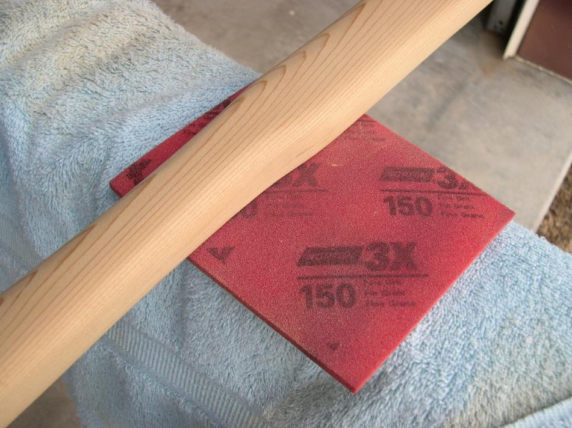

| Greenland Paddle Construction | Menu Previous Page Next Page |
|
 The final loom shape is a rounded rectangle. This shape is easier to obtain than an oval shape, plus, the rounded rectangle shape provides a stable base for your thumb at the transition from loom to blade. On a Greenland paddle, only the thumb rests on the loom, with all other fingers gripping the blade. A more rounded shape is desirable at the base of the blade. After the desired shape is achieved, switch to 150 - 320 paper for final power sanding, especially near the thin tips. A hand sanding pad can also be used near the tips, and for final sanding of the entire paddle. |
|